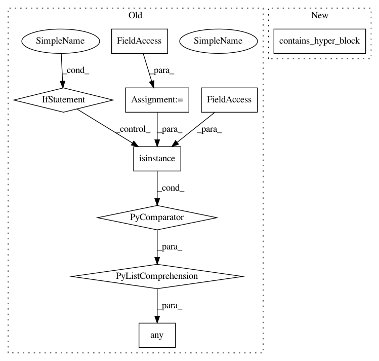

021f346839bbab5b22e5858eab16d382af26185b,autokeras/hypermodel/graph.py,GraphHyperModel,build,#GraphHyperModel#Any#,65
Before Change
self._plain_graph_hm = GraphHyperModel(inputs, outputs)
def build(self, hp):
if any([isinstance(block, hyperblock.HyperBlock)
for block in self._blocks]):
return self._plain_graph_hm.build(hp)
real_nodes = {}
for input_node in self._model_inputs:
After Change
self._plain_graph_hm = GraphHyperModel(inputs, outputs)
def build(self, hp):
if self.contains_hyper_block():
return self._plain_graph_hm.build(hp)
real_nodes = {}
for input_node in self._model_inputs:
In pattern: SUPERPATTERN
Frequency: 4
Non-data size: 9
Instances
Project Name: keras-team/autokeras
Commit Name: 021f346839bbab5b22e5858eab16d382af26185b
Time: 2019-07-30
Author: jhfjhfj1@gmail.com
File Name: autokeras/hypermodel/graph.py
Class Name: GraphHyperModel
Method Name: build
Project Name: keras-team/autokeras
Commit Name: 021f346839bbab5b22e5858eab16d382af26185b
Time: 2019-07-30
Author: jhfjhfj1@gmail.com
File Name: autokeras/hypermodel/graph.py
Class Name: GraphHyperModel
Method Name: hyper_build